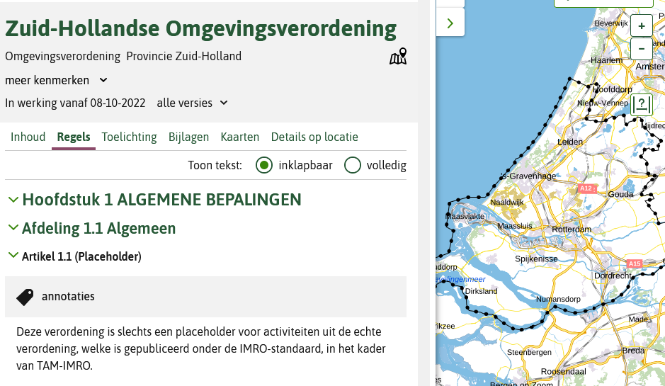
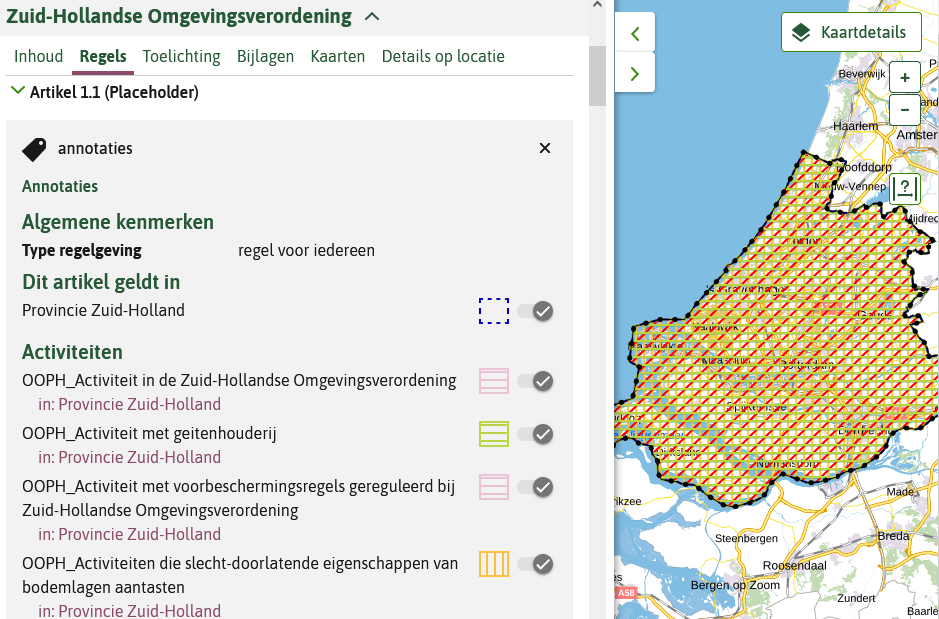
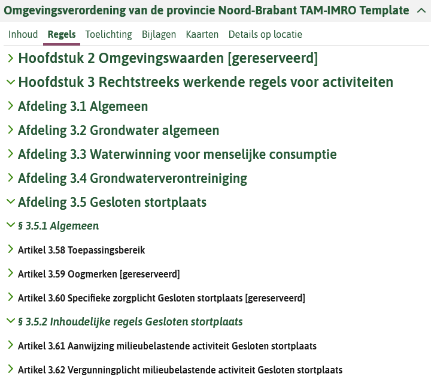
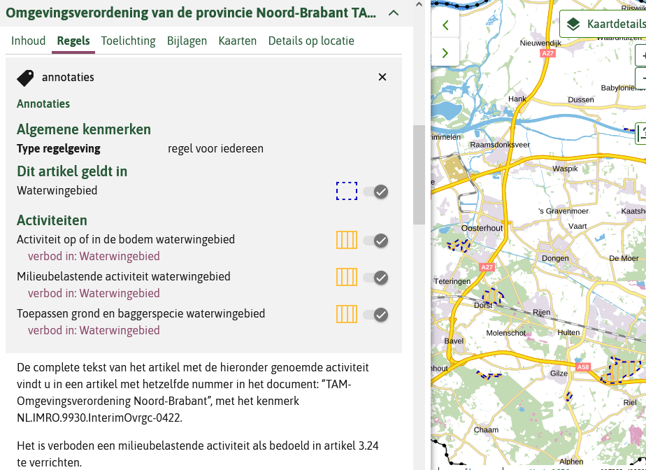
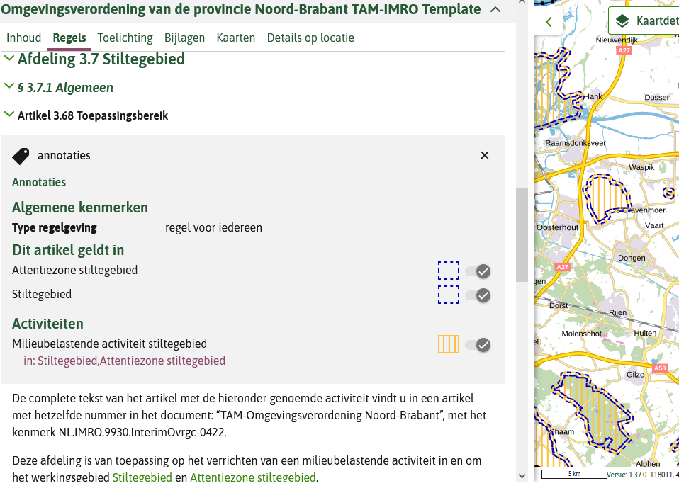
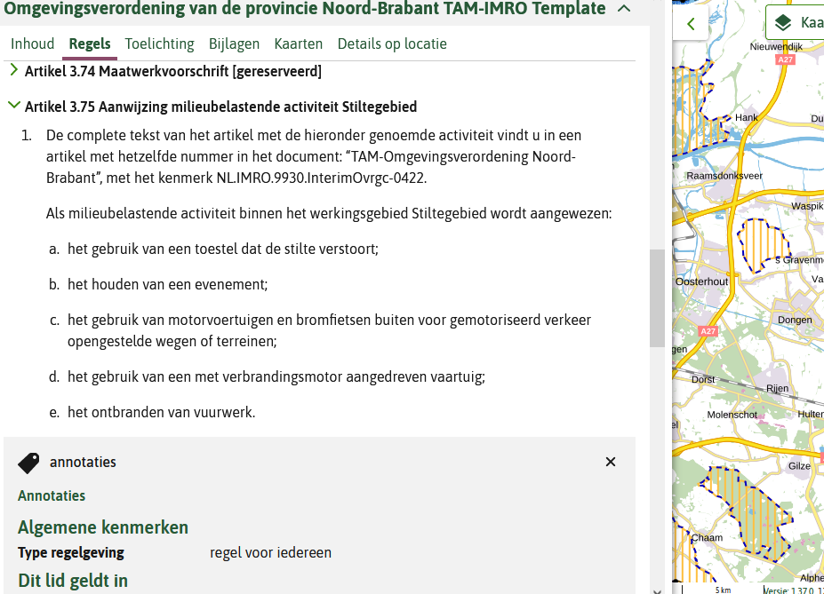
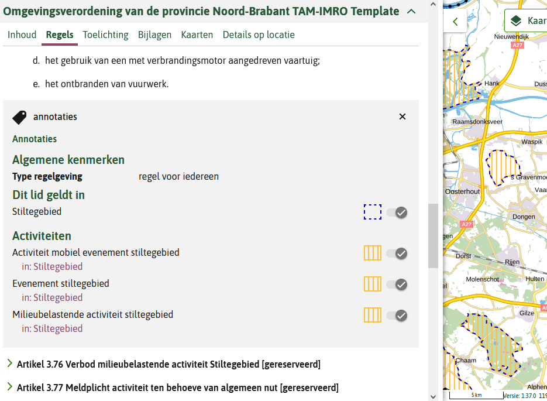

Er is niet voorzien in overgangsrecht voor de omgevingsverordening. Op het moment van van inwerkingtreding van de Omgevingswet moeten de provincies hun omgevingsverordeningen hebben vastgesteld en bekendgemaakt.
De provincie moet voor inwerkingtreding van de Omgevingswet conform Awb artikel 3.4 een ontwerp-omgevingsverordening en een definitieve omgevingsverordening publiceren. Daarna volgen wijzigingsbesluiten, of volgt een gehele intrekking van de omgevingsverordening waarna een geheel nieuwe omgevingsverordening wordt vastgesteld. Zowel de initiële omgevingsverordening als de wijzigingsbesluiten kunnen worden gemaakt met behulp van de werkafspraak TAM-omgevingsverordening. Juridisch gezien is de met behulp van de TAM opgestelde, vastgestelde en gepubliceerde omgevingsverordening een volwaardige omgevingsverordening onder de Omgevingswet. Inhoudelijk moet deze (wijziging van de) omgevingsverordening voldoen aan de eisen vanuit de Omgevingswet. De met de RO Standaarden opgestelde omgevingsverordening moet door de provincie uiteindelijk worden inhoudelijk verwerkt en technisch omgezet in de omgevingsverordening op basis van de STOP/TPOD standaard.
1.1 Werkafspraak en handreiking
Met de werkafspraak TAM-omgevingsverordening wordt provincies de mogelijkheid geboden om een omgevingsverordening onder de Omgevingswet op te stellen op basis van de RO Standaarden 2012, en te publiceren via Ruimtelijkeplannen.nl en de overbruggingsfunctie van het Informatiehuis Ruimte naar het Digitaal Stelsel Omgevingswet. De omgevingsverordening conform TAM maakt juridisch onderdeel uit van de Omgevingswet maar wordt technisch in de huidige landelijke voorziening geplaatst. Rekening houdend met de wettelijke vereisten van de Omgevingswet is de TAM omgevingsverordening een omgevingsdocument.
De onderdelen van de TAM-omgevingsverordening voor provincies zijn:
de werkafspraak TAM-omgevingsverordening;
validatieregels, geïmplementeerd in de validator van Ruimtelijkeplannen.nl;
de verwerking door de overbruggingsfunctie van het Informatiehuis Ruimte naar het Digitaal Stelsel Omgevingswet;
deze technische handreiking.
Deze handreiking vult de werkafspraak aan, ter ondersteuning van de provincies voor de technische toepassing van de werkafspraak in de praktijk.
In het Toepassingsprofiel (TPOD) omgevingsverordening zijn de inhoudelijke aspecten van de omgevingsverordening beschreven.
1.2 Doel van de handreiking
De handreiking geeft de werkwijze en keuzemogelijkheden weer voor het Omgevingswet-instrument omgevingsverordening. Deze omgevingsverordening wordt door de provincie technisch gerealiseerd met de RO Standaarden 2012 en daarna, door gebruik te maken van de Wro plan keten via Ruimtelijkeplannen.nl, naar het Digitaal Stelsel Omgevingswet te ontsluiten.
Deze handreiking gaat niet in op de inhoud van het instrument omgevingsverordening. Voor de juridische context van het instrument verwijzen we naar de Omgevingswet- en onderliggende regelgeving. Voor meer informatie over de omgevingsverordening, raadpleeg de TPOD omgevingsverordening via de Geonovum website en de website
Informatiepunt Leefomgeving.
1.3 Leeswijzer
Deze handreiking is bedoeld voor iedereen die een omgevingsverordening gaat maken en/of publiceren en daarbij overweegt gebruikt te maken van deze tijdelijke alternatieve maatregel. Aangeraden wordt om de hele handreiking te lezen, naast de werkafspraak. Het is wel van belang om de toepassing van het gebruik van deze tijdelijke alternatieve maatregel in zijn geheel te begrijpen om een afgewogen beslissing te kunnen nemen en te beoordelen hoe de TAM toegepast kan worden in de eigen organisatie.
De werkafspraak en de handreiking gaan samen in op hoe het technisch mogelijk gemaakt wordt om Wro plansoftware te gebruiken om een (wijziging van de) omgevingsverordening te maken en te publiceren via Ruimtelijkeplannen.nl. Via het Informatiehuis Ruimte (de ‘overbruggingsfunctie’) komt het besluit daardoor ook beschikbaar in het omgevingsloket. Deze handreiking is een technische handleiding en geen juridische. We geven dus niet aan hoe een de omgevingsverordening juridisch/inhoudelijk moet worden vormgegeven conform de Omgevingswet.
Hoofdstuk 2 gaat in op de omgevingsverordening. Hoofdstuk 3 betreft het publiceren van de omgevingsverordening. Een omgevingsverordening conform TAM moet worden gebruikt in combinatie met een zogenoemde placeholder om toepasbare regels bij activiteiten te kunnen maken: het opnemen van toepasbare regels met indieningsvereisten voor het vullen van aanvraagformulieren is verplicht. In hoofdstuk 4 is een korte toelichting en de keuzes met betrekking tot de placeholder opgenomen. Hoofdstuk 5 geeft de aandachtspunten bij de afweging om al dan niet gebruik te gaan maken van de optie TAM-omgevingsverordening. In de bijlage van deze handreiking is dit verder toegelicht en zijn er voorbeelden opgenomen.
2. Omgevingsverordening
De omgevingsverordening bevat alle provinciale regels voor de fysieke leefomgeving. Per provincie is er één omgevingsverordening die de bestaande verordeningen kan vervangen. Zoals de milieuverordening, de planologische verordening, de ontgrondingenverordening, de landschapsverordening en de waterverordening.
Er is geen overgangsrecht voor bestaande provinciale verordeningen die opgaan in de omgevingsverordening op basis van de Omgevingswet. De provincies hebben afgesproken dat de omgevingsverordening klaar moet zijn wanneer de Omgevingswet ingaat. Bestaande provinciale verordeningen gelden dus niet meer vanaf de inwerkingtreding.
De werkafspraak TAM-omgevingsverordening betreft het opstellen van een initiële omgevingsverordening en het is ook mogelijk in het geval van wijzigingsbesluiten de TAM-omgevingsverordening te gebruiken. Dit wordt in paragraaf 2.3 toegelicht.
2.1 Technische uitgangspunten
De kern van het gebruik van TAM-omgevingsverordening is, dat in aanloopt naar en na inwerkingtreding van de Omgevingswet, de bestaande Wro planketen gebruikt kan worden voor het opstellen en publiceren van de omgevingsverordening. De RO Standaarden 2012 worden niet aangepast. Ook wordt op geen enkele manier iets aangepast aan de Wro plansoftware die wordt gebruikt voor digitale ruimtelijke plannen. Ook aan de manier van publiceren naar Ruimtelijkeplannen.nl verandert niets. Wel wordt de validator van Ruimtelijkeplannen.nl met validatieregels aangevuld en aangepast om het overgangsrecht van Wro naar Omgevingswet te faciliteren en de TAM-omgevingsverordening mogelijk te maken.
De validator moet een TAM-omgevingsverordening kunnen herkennen om een ontwerpversie wel door te laten ná inwerkingtreding. Daarom is in de werkafspraak bepaald dat de plannaam begint met “TAM-omgevingsverordening”, gevolgd door de naam van het plan. Hiermee wordt het onderscheid gemaakt tussen een Wro provinciale verordening en een nieuw omgevingsdocument op basis van TAM-omgevingsverordening. Om een omgevingsdocument te kunnen nemen met behulp van TAM-omgevingsverordening wordt uitsluitend gebruik gemaakt van de planfiguur ‘provinciale verordening’.
De TAM-omgevingsverordening moet uiteindelijk door de provincie omgezet worden naar STOP/TPOD. Het gebruik van TAM-omgevingsverordening houdt dus altijd (extra) werk in de toekomst in. Dit gegeven moet mee worden genomen bij de afweging over het al dan niet gebruiken van TAM-omgevingsverordening.
2.2 Gebruik IMRO
Om een TAM-omgevingsverordening te maken, kan binnen het planfiguur ‘provinciale verordening’ in principe gebruik worden gemaakt van alle objecten: besluitgebied, besluitvlak, besluitsubvlak. Belangrijk is te bedenken dat een TAM-omgevingsverordening technisch moet voldoen aan IMRO2012 om door de validator te kunnen komen. Concreet betekent dat ook dat er altijd een object ‘besluitgebied’ moet zijn met de gegevens van het besluit, ondanks dat de omgevingsverordening dit niet kent onder de Omgevingswet.
In principe is een omgevingsverordening vormvrij. De provincie bepaalt binnen zekere grenzen hoe een omgevingsverordening wordt opgebouwd. Toch is het niet in lijn met de Omgevingswetgedachte om te blijven werken met de Wro-objecten besluitgebied, besluitvlak, besluitsubvlak, daar waar een TAM-omgevingsverordening objecten als activiteiten en gebiedsaanwijzingen. Daarnaast gaat de STOP/TPOD standaard uit van een koppeling van een werkingsgebied (locatie) aan elke regeltekst. Dit komt overeen met het feit dat IMRO2012 bij de objecten besluitgebied, besluitvlak, besluitsubvlak verplicht het attribuut verwijzingNaarTekstInfo moet worden gebruikt.
Figuur 1Koppeling tussen regeltekst en Locatie (werkingsgebied) zoals deze wordt gebruik in de STOP/ TPOD standaard
2.3 TAM omgevingsverordening
Een omgevingsverordening opgesteld met behulp van TAM in plaats van de STOP/TPOD standaarden, moet herkenbaar zijn. Dit is belangrijk voor een goede validatie en voor de overbruggingsfunctie naar de landelijke voorziening Digitaal Stelsel Omgevingswet. De werkafspraak is als volgt:
het typePlan is provinciale verordening
de naam van het plan is ‘TAM-omgevingsverordening[spatie][plannaam]’
Let er bij de naamgeving op dat:
TAM wordt geschreven in hoofdletters;
omgevingsverordening wordt geschreven in kleine letters;
er geen gebruik wordt gemaakt van spaties tussen TAM en omgevingsverordening, maar alleen een koppelteken.
Er is altijd een besluitgebied dat de gehele provincie betreft. Bij het object besluitgebied moet het atribuut planStatusInfo worden ingevuld. Ten behoeve van de TAM-omgevingsverordening is de volgende planstatus toegestaan: ontwerp en vastgesteld.
Gekoppeld met de dossierstatus in het manifest betekent dit:
planstastus ontwerp met de dossierstatus in voorbereiding;
planstastus vastgesteld met de dossierstatus vastgesteld dan wel geheel onroepelijk in werking.
Er is minimaal 1 besluitvlak. Voor Gebiedsaanwijzingen en Activiteiten kan gebruik gemaakt worden van besluitvlakken of besluitsubvlakken.
Bij tekstwijzigingen bevat het besluit alleen de gewijzigde artikelen. Bij artikelen die op een specifieke locatie gericht zijn, kan er een besluitvlak of besluitsubvlak worden aangemaakt met de duiding van de wijziging.
3. Publiceren
3.1 Ruimtelijkeplannen.nl
Het publiceren van het uiteindelijk met RO Standaarden 2012 vormgegeven (wijziging van de) omgevingsverordening gaat niet anders dan zoals onder de Wro een provinciale verordening wordt gepubliceerd. Dat betekent dat er geen aanpassingen aan software, procedure of manier van handelen nodig zijn. De enige voorwaarde is dat de omgevingsverordening conform TAM voldoet aan de technische vereisten van de RO Standaarden. Dat kan op de normale wijze vooraf worden getoetst door de omgevingsverordening via de optie manifest-validatie aan te bieden aan de validator van Ruimtelijkeplannen.nl. Als deze online validatie slaagt zal bijna zeker de publicatie ook goed gaan.
De publicatie van een omgevingsverordening conform TAM volgt dezelfde route als een provinciale verordening onder de Wro. Door met de plansoftware het gevalideerde plan te publiceren, wordt de set bestanden die de omgevingsverordening vormen op de webdirectory van de provincie geplaatst (dat kan ook een locatie bij de leverancier zijn). Tweemaal per dag komt de harvester van Ruimtelijkeplannen.nl langs, controleert of er nieuwe plannen in het manifest van de provincie staan en, als dat het geval is, dan worden de planbestanden opgehaald en weergegeven op de website van Ruimtelijkeplannen.nl.
Technisch betekent dat dat de omgevingsverordening onderdeel wordt van de provinciale Wro planvoorraad zoals opgenomen in het Wro-manifest. Dat heeft weinig consequenties, maar de totale planvoorraad moet wel goed beheerd worden door de provincie. Het is immers tijdelijk dat Wro-besluiten en omgevingsdocumenten door elkaar staan in de planvoorraad die beheerd wordt met behulp van de Wro plansoftware.
Alle plannen in Ruimtelijkeplannen.nl worden voortdurend verwerkt door de overbruggingsfunctie van Informatiehuis Ruimte voor de ontsluiting in het DSO-LV. Hierdoor worden de besluiten van de provincie zichtbaar in de viewer 'Regels op de Kaart' (het omgevingsloket).
3.2 Pilot.ruimtelijkeplannen.nl
Technische gezien is een omgevingsverordening conform TAM een IMRO2012 provinciale verordening. Daarom kan de omgevingsverordening ook gepubliceerd worden op de test-omgeving van Ruimtelijkplannen.nl: dit maakt de verordeningen raadpleegbaar op pilot.ruimtelijkeplannen.nl zonder dat daar juridische consequenties aan verbonden zijn. Deze route kan dienen om, voor inwerkingtreden Omgevingswet, de omgevingsverordening conform TAMtechnisch te toetsen op juistheid en volledigheid.
Het is voor de inwerkingtreding van de Omgevingswet slechts beperkt en alleen in samenwerking met het ministerie BZK en het Kadaster mogelijk een omgevingsverordening conform TAM te testen in de keten naar het omgevingsloket, de zogenaamde pré-omgeving van het DSO.
3.3 Weergave DSO
Bij inwerkingtreding van de Omgevingswet zal de viewer van Ruimtelijkeplannen.nl niet meer de volledige actuele situatie weergeven. Raadplegen van ruimtelijke plannen kan vanaf dat moment in samenhang met de omgevingsdocumenten op basis van STOP/TPOD uitsluitend via de viewer ‘Regels op de Kaart’ van het omgevingsloket.
De viewer ‘Regels op de Kaart’ van het omgevingsloket geeft de Wro plannen zoveel mogelijk weer als nu gebruikelijk is op Ruimtelijkeplannen.nl. De kaartweergave van provinciale verordeningen, en dus ook van omgevingsverordeningen conform TAM, kan door het bevoegd gezag gestuurd worden met de keuze van de symboolcodes en kaarten, bij het definiëren van objecten in de Wro plansoftware. Als de provincie kiest voor een structuur van de omgevingsverordening conform TAM dat dicht bij de opbouw van de huidige provinciale verordening ligt, dan zal de weergave daarvan ook veel lijken op wat we gewend zijn bij de provinciale verordeningen van de Wro. Gebruik van de symboolcodes van Praktijkrichtlijn Provinciale Verordening is noodzakelijk om de TAM-omgevingsverordening goed door de keten te krijgen en te verbeelden in het omgevingsloket.
4. Placeholder document
4.1 Inleiding
Het maken van een omgevingsverordening conform TAM bestaat uit twee onderdelen: a) publicatie van de omgevingsverordening via de Wro-route, b) publicatie van een placeholder document conform STOP/ TPOD.
Het placeholder document is een via de Landelijke voorziening bekendmaken en beschikbaar stellen (LVBB) gepubliceerd document met een link naar de publicatie van de verordening en naar de benodigde activiteit-annotaties bij die verordening. Hierdoor is het mogelijk om toepasbare regels klaar te zetten in het Omgevingsloket die horen bij de omgevingsverordening. De placeholder maakt het mogelijk om de toepasbare regels die horen bij de omgevingsverordening, klaar te zetten in het Omgevingsloket. Deze is nodig om aan de wettelijke vereisten op het gebied van digitale dienstverlening bij inwerkingtreding te voldoen.
4.2 Keuzes
Voor het maken van een placeholder document kan de provincie kiezen uit twee mogelijkheden:
De provincie maakt het placeholder document niet zelf. De provincie vraagt ondersteuning bij het maken van het placeholder document bij het Informatiepunt Leefomgeving (IPLO) door contact op te nemen met de IPLO helpdesk. De aanvraag voor het laten maken van een placeholder document kan uitelijk 30 november 2023 bij de IPLO helpdesk worden ingediend.
De provincie maakt het placeholder document wel zelf. De provincie bepaalt welke gegevens minimaal worden opgenomen en maakt zelf het placeholder document met de beschikbare software conform de STOP/ TPOD standaarden. In de bijlage van deze handreiking is dit verder toegelicht en zijn er voorbeelden opgenomen.
5. Aandachtspunten
Een omgevingsverordening is juridisch een omgevingsdocument maar technisch een (Wro) provinciale verordening. Dat heeft als voordeel dat in noodgevallen toch besluiten voor ruimtelijke ontwikkelingen doorgang kunnen vinden zelfs als de keten ‘van plan tot publicatie’ door welke oorzaak dan ook nog niet kan worden ingezet na inwerkingtreding van de Omgevingswet. Maar er zijn ook aandachtspunten, hiermee dient rekening te worden gehouden bij de inzet van TAM-omgevingsverordening:
De weergave van een omgevingsverordening conform TAM wordt gestuurd door de keuze van de IMRO-symboolcodes die worden ingezet om het besluit te maken. Het besluit is raadpleegbaar in het omgevingsloket. De werking van de viewer Regels op de Kaart en de overbruggingsfunctie bepalen uiteindelijk hoe bruikbaar het kaartbeeld wordt;
Tijdreizen in de viewer Regels op de Kaart zal niet goed werken met omgevingsverordening: IMRO2012 heeft niet de juiste tijdreisattributen om dit te kunnen ondersteunen;
Bij het gebruik van de TAM-omgevingsverordening kan wel de relatie juridische regel en werkingsgebied worden nagebootst, maar annotaties zijn niet mogelijk. IMRO2012 biedt hier geen mogelijkheden voor. Dat houdt in dat er geen relatie met Toepasbare Regels kan worden gelegd, en een omgevingsverordening conform TAM niet werkt bij de vragenbomen in het omgevingsloket, net zoals dat ook voor bestemminsplannen in het tijdelijk deel omgevingsplan geldt. Voor de activiteiten geldt dat er een placeholder document in het DSO nodig is dat met behulp van de STOP/ TPOD standaarden is geladen;
Uiteindelijk moet een omgevingsverordening, inclusief de wijzigingsbesluiten conform de STOP/TPOD standaarden zijn opgesteld en geladen in het DSO. Dit betekent feitelijk dat het besluit opnieuw gemaakt en bekendgemaakt moet worden. Dat is extra werk en afhankelijk van de juridisch inbedding, is het besluit opnieuw appellabel, ondanks het feit dat het al juridisch een omgevingsdocument is.
Het zijn deze overwegingen die meegenomen kunnen worden bij de afweging om al dan niet gebruik te gaan maken van de mogelijkheid van een omgevingsverordening conform TAM.
6. Bijlage: placeholder
De juridisch geldende versie van de omgevingsverordening is een op basis van de RO Standaarden gemaakte en gepubliceerde provinciale verordening. De omgevingsverordening wordt ook getoond in de viewer 'Regels op de Kaart' (het omgevingsloket). Omdat het IMRO niet dezelfde manier van annoteren kent zoals in de STOP/ TPOD standaarden, kunnen alleen de tekst en locaties getoond worden in de viewer. Voor het kunnen doen van meldingen en vergunningaanvragen (waarbij indieningsvereisten een rol spelen) via het DSO omgevingsloket is dit niet voldoende. Daarom is het de bedoeling dat er naast de omgevingsverordening conform TAM, separaat ook een STOP/ TPOD document met geannoteerde activiteiten in het DSO worden geladen: het placeholder document.
Bij het maken van een placeholder kunnen op een aantal vlakken keuzes worden gemaakt die kunnen leiden tot een heel simpele variant, of juist een versie met wat meer informatie en betere dienstverlening. Visuele voorbeelden van van testen van de placeholders van Zuid-Holland en Noord-Brabant die dit illustreren zijn toegevoegd in paragraaf voorbeelden.
6.1 Reikwijdte
Het al dan niet tevoorschijn komen van vergunningcheck of activiteiten waarvoor een vergunning aangevraagd kan worden of een melding kan worden gedaan, kan in het omgevingsloket afhankelijk zijn van de locatie waarvoor dit wordt gedaan. De geografische reikwijdte waarin de activiteiten naar voren komen zijn:
Geheel ambtsgebied
Dit is het geval als alle activiteiten conform de TPOD standaarden als activiteitlocatieaanduiding het ambtsgebied krijgen of als alle activiteiten, eventueel met specifiekere activiteitlocatieaanduidingen, worden opgenomen in een artikel met als werkingsgebied het ambtsgebied. Het gevolg van deze keuze is dat in het loket een grote hoeveelheid activiteiten naar voren komen, die mogelijk niet relevant zijn voor de betreffende locatie waarop de vergunning check of een vergunning aanvraag wordt gedaan.
Voorbeeld: placeholder Zuid-Holland.
Specifiek in het van toepassing zijnde gebied
Dit vraagt om een toepassing van de activiteiten in verschillende artikelen met specifieke werkingsgebieden en specifieke activiteitlocatieaanduidingen, en de opname van de OW-locaties en GIO's in het placeholder document.
Voorbeeld: placeholder Noord-Brabant.
6.2 Artikelstructuur
In een placeholder document kunnen activiteiten bij één artikel worden geannoteerd of kunnen er meerdere artikelen voor iedere activiteit afzonderlijk worden opgenomen. De mate waarin de structuur van de artikelen met de annotaties van de (juridisch geldende via TAM gepubliceerde) omgevingsverordening kan op twee manieren worden uitgewerkt:
Geen gerelateerde structuur
het placeholder document bevat één artikel in de meest eenvoudig variant of opsomming van enkel de artikelen met geannoteerde activiteiten. Afhankelijk van de gebruikte software krijgen die daarmee een andere nummering dan in de omgevingsverordening conform TAM. Er is geen relatie te leggen met de omgevingsverordening. De weergave in de viewer 'Regels op de Kaart' heeft weinig inhoudelijke toegevoegde waarde.
Zelfde structuur
Het placeholder document bevat alle artikelen die ook in de via TAM gepubliceerde omgevingsverordening voorkomen. Dit betekent dat:
hoofdstukken zonder activiteiten op gereserveerd kunnen worden gezet;
in de hoofdstukken met activiteiten, de artikelen zonder activiteit op gereserveerd kunnen worden gezet (worden leeggemaakt en worden gereserveerd);
de artikelen met activiteiten worden geannoteerd.
De gebruiker in de viewer 'Regels op de Kaart' kan makkelijker de relatie leggen naar de tekst van de omgevingsverordening conform TAM. Ook werkt bij de viewer 'Regels op de Kaart' het filtermechanisme (als gevolg van de werkingsgebieden en met het filteren op activiteit) waardoor de relevante artikelen naar voren komen.
6.3 Detailniveau annoteren
Bij het hanteren van dezelfde structuur van de regels in de omgevingsverordening als in het placeholder document kan er bij het annoteren ook nog een keuze gemaakt worden voor een wat globalere aanpak of een aanpak die meer de inhoudelijke artikelen volgt.
Globale structuur
De annotaties kunnen globaler gehouden worden, bijvoorbeeld gekoppeld aan de artikelen ‘toepassingsbereik’ en ‘aanwijzing van de activiteiten’. Dan is de activiteitregelkwalificatie ‘anders geduid’.
In het voorbeeld placeholder Noord-Brabant is dit toegepast in de afdeling over het stiltegebied.
De inhoudelijke keuzes bij de opbouw van de functionele structuur van activiteiten zijn niet anders dan bij de reguliere verordening. De functionele structuur volgt aan de ene kant de opbouw van de juridische regels maar moet aan de andere kant rekening houden met de gewenste effecten bij de toepasbare regels.
6.5 Tekst van de artikelen
Net als bij de artikelstructuur zijn er voor het opnemen van tekst in het placeholder document meerdere varianten mogelijk. Bij de eenvoudige versie zonder de structuur van de verordening zijn de varianten als volgt:
Alleen een beschrijving van de status van de placeholder, bij voorkeur met een verwijzing naar de naam en identificatie van de omgevingsverordening conform TAM;
Een verwijzing naar de omgevingsverordening conform TAM met enkel de benoeming van de activiteit en de locatie;
Een verwijzing naar de omgevingsverordening conform TAM met de hele artikeltekst waarin de activiteit en de locatie aan de orde komen om zo meer duiding te kunnen geven aan de activiteit.
6.6 Voorbeelden
6.6.1 Zuid-Holland
Naam: Zuid-Hollandse Omgevingsverordening
Identificatie: /akn/nl/act/pv28/2022/OOWPVZH8Reg
Variant met één artikel
Aan dit artikel zijn alle activiteiten gekoppeld met als werkingsgebied het hele ambtsgebied.

Figuur 2Activiteiten gekoppeld met als werkingsgebied het hele ambtsgebied
Figuur 3Activiteiten gekoppeld met als werkingsgebied het hele ambtsgebied van provincie Zuid-Holland
6.6.2 Noord-Brabant
Naam: Omgevingsverordening van de provincie Noord-Brabant TAM-IMRO Template
Variant met volledige tekststructuur omgevingsverordening

Figuur 4Niet-geannoteerde onderdelen staan op 'gereserveerd', geannoteerde artikelen zijn volledig opgenomenAnnotatie activiteit en werkingsgebied bij elk artikel waar dit relevant is
Figuur 5Specifieke activiteitregelkwalificatie, bijvoorbeeld een verbod bij het verbodsartikelAlternatief: globalere annotatie
Figuur 6Globale annotatie in beeld
Figuur 7Globale annotatie in tekst
Figuur 8Globale annotatie in beeld en tekst